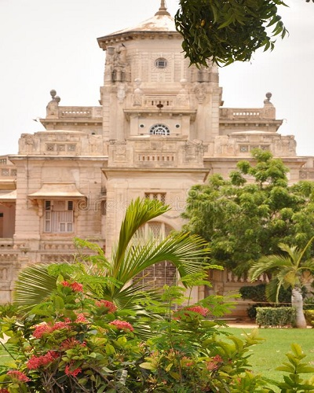
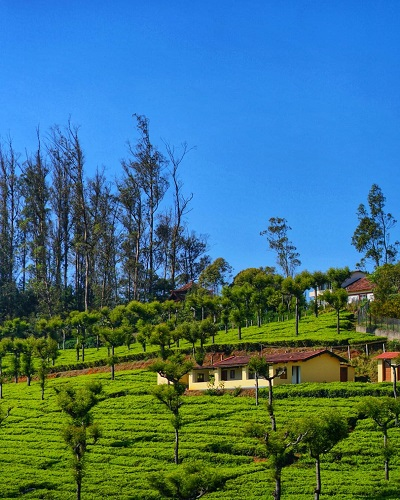
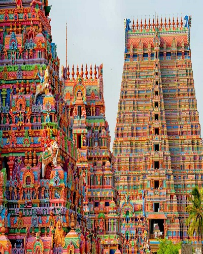
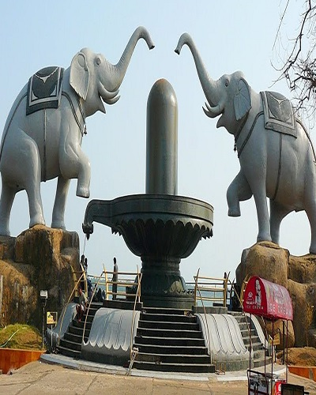
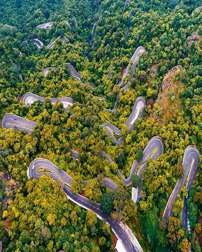

The best time to visit Chennai is between the months of October to February, i.e. from the end of monsoon and all of winter.Read More
Chennai

Chettinad
The best time to visit this place is from October to March.Read More
Chettinad
Coimbatore
Best time to visit Coimbatore is between the months of July and March.Read More
Coimbatore
Hogenakkal
The best time to visit Hogenakkal Falls is between October and February, when the waterfall is in its full glory.Read More
Hogenakkal
Kanchipuram
Kanchipuram in October, November, December, January and February to enjoy pleasant weather with mild temperaturesRead More
Kanchipuram
Kanyakumari
The ideal time to visit Kanyakumari is between the months of October to March when you can go sightseeing and participate in water adventures at the beach.Read More
Kanyakumari
kodaikanal
Kodaikanal can be visited through the year, but the ideal time is in the winter between October and March. Read More
kodaikanal
Kumbakonam
Winters are the Best Season to visit Kumbakonam as you can find pleasant atmosphere and can enjoy the sightseeing there.Read More
Kumbakonam
Madurai
December to February is the winter season and the temperature ranges between 20 and 29 degrees Celsius. It is the best time to visit Madurai as the climate is very pleasant at this time of the year.Read More
Madurai
Mahabalipuram
The best time to visit Mahabalipuram is October, November, December, January and February.Read More
Mahabalipuram

Ooty
Though Ooty has good climate all year round, the best time to visit Ooty is in the summer months between March and June. Read More
Ooty
Pulicat
The best time to visit Pulicat is between October - March. Read More
Pulicat
Rameshwaram
The best time to visit Rameshwaram will be from October to April as during this period, you will find the climate on the pleasant side.Read More
Rameshwaram
Tanjavur
The best season to visit Thanjavur is the winters and the onset of summers.The best months to visit are October, November, December, January, February and March.Read More
Tanjavur

Trichy
Best time to visit Tiruchirappalli is during the month of November to March as you can get pleasantly cool weather.Read More
Trichy
Tuticorin
The ideal time to visit Thoothukudi is in between the months of December and March when the weather remains favourable for tourists to enjoy.Read More
Tuticorin
Vellore
Winter in Vellore generally starts in November and lasts till February. The temperature ranges between 22 and 32 degrees Celsius. The region is not very cold and hence it is considered as the best time to visit Vellore. Read More
Vellore

Yanam
Monsoon is the Best Season to visit Yanam as you can get pleasant atmosphere.Read More
Yanam

Yercaud
The period from October to June is considered the best time to visit Yercaud.Read More